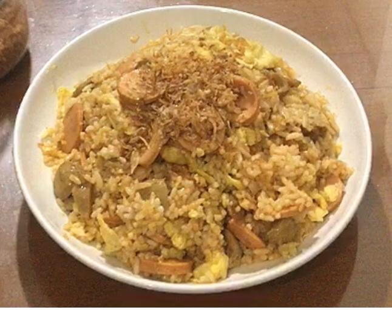

Cooking Procedure -> Ingredients-Material-Steps
Ok...now, please pay attention to the text of the procedure for making simple instant fried rice carefully!

Hey! Need a new go-to side dish for busy weeknights? Making instant fried rice at home is always a great staple, and this easy recipe comes together in just 10 minutes!
So, our cooking topic this time, we will make Simple Instant Fried Rice!
Ok...now, please pay attention to the text of the procedure for making simple instant fried rice carefully!
After you read the procedure text, you may see how to make and cook it, hope this helps you!
Alright, that's the procedure for how to make and cook a simple instant fried rice.
I hope this is helpful and useful for you guys!
Thank you!
Hey! Thanks for visiting my website! I hope this helps in your hobby of cooking! :)
If you are interested in this website, please support it by giving criticism and suggestions, so that we can be better in the future!
Send your criticisms and suggestions onm our e-mail:
easycooking@gmail.com
If you want to know more about this website, you can follow our social media! :)
Instagram : @easycooking
Youtube :
Easy Cooking